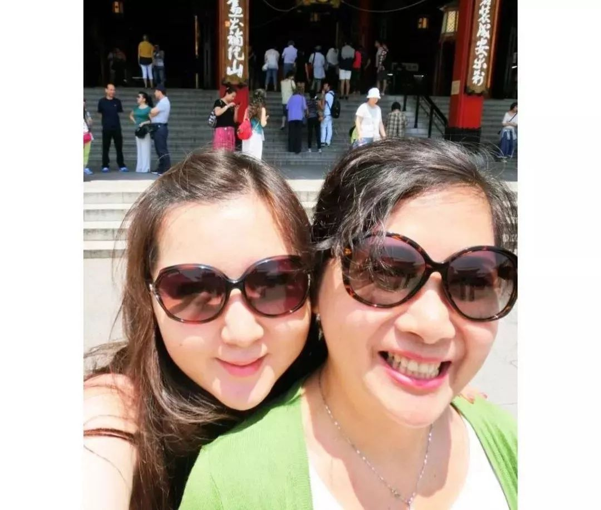
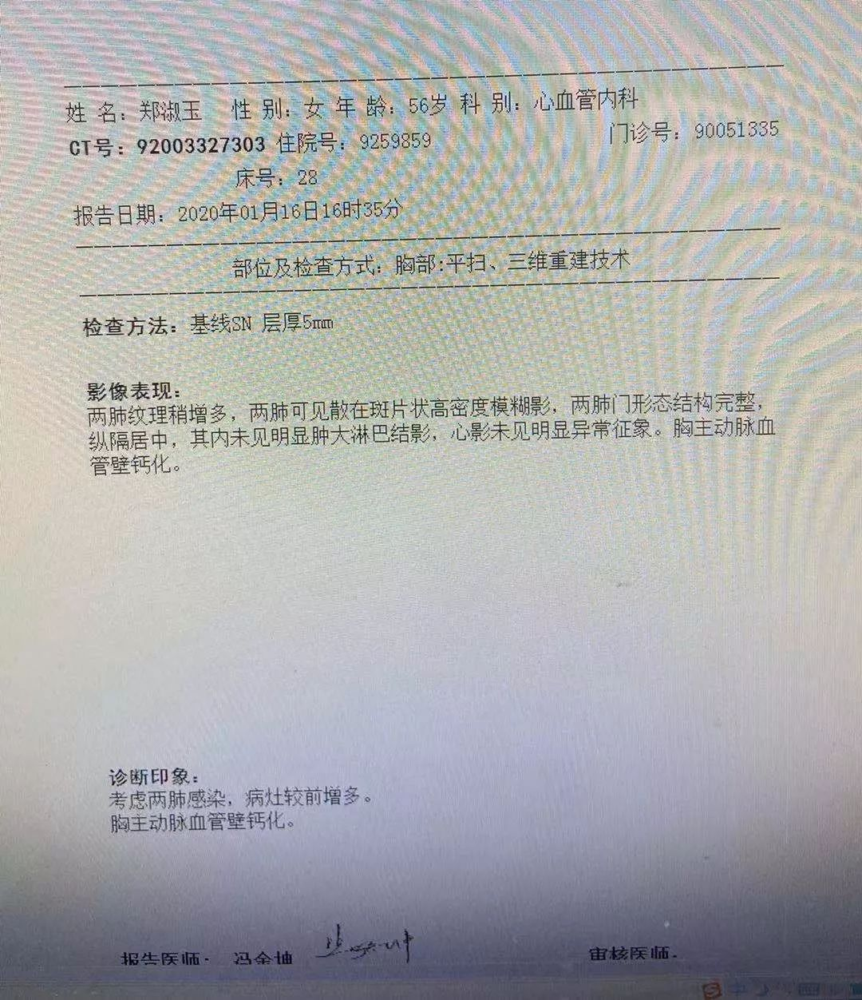
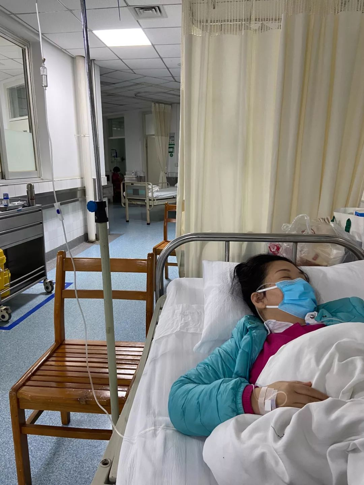
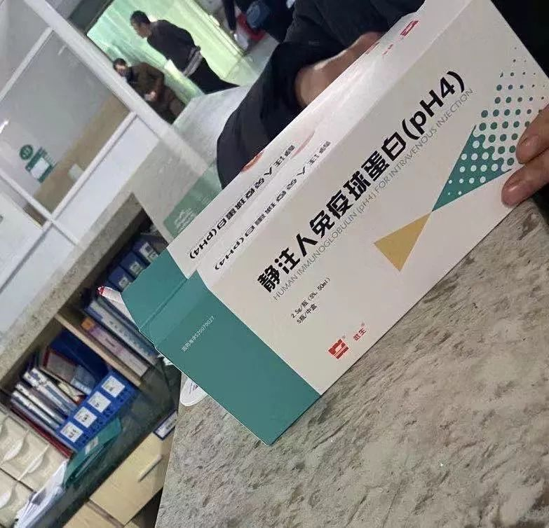
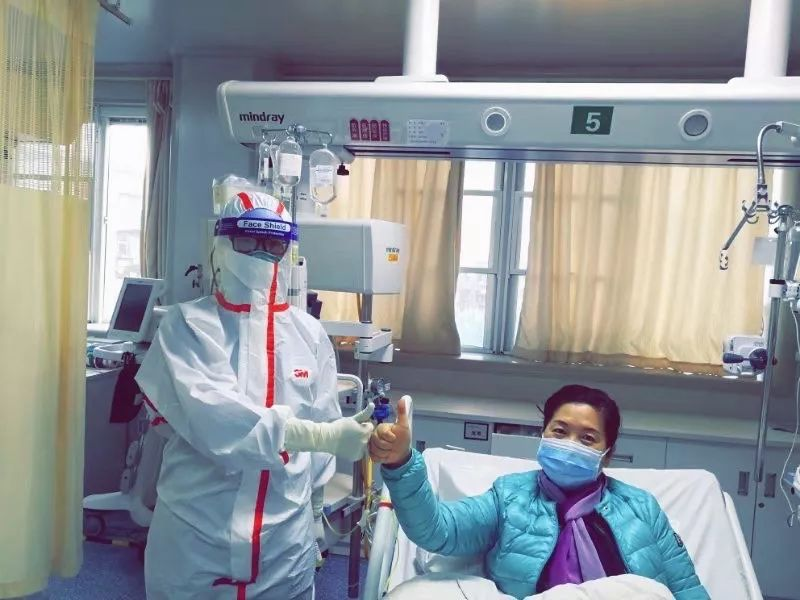
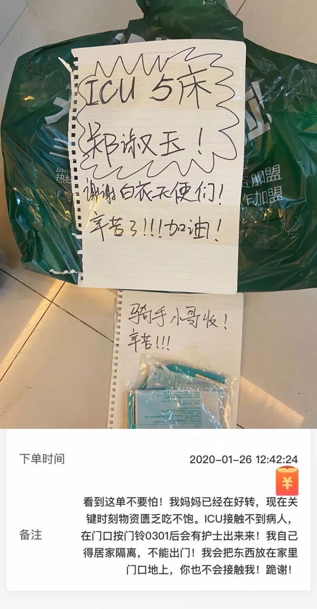
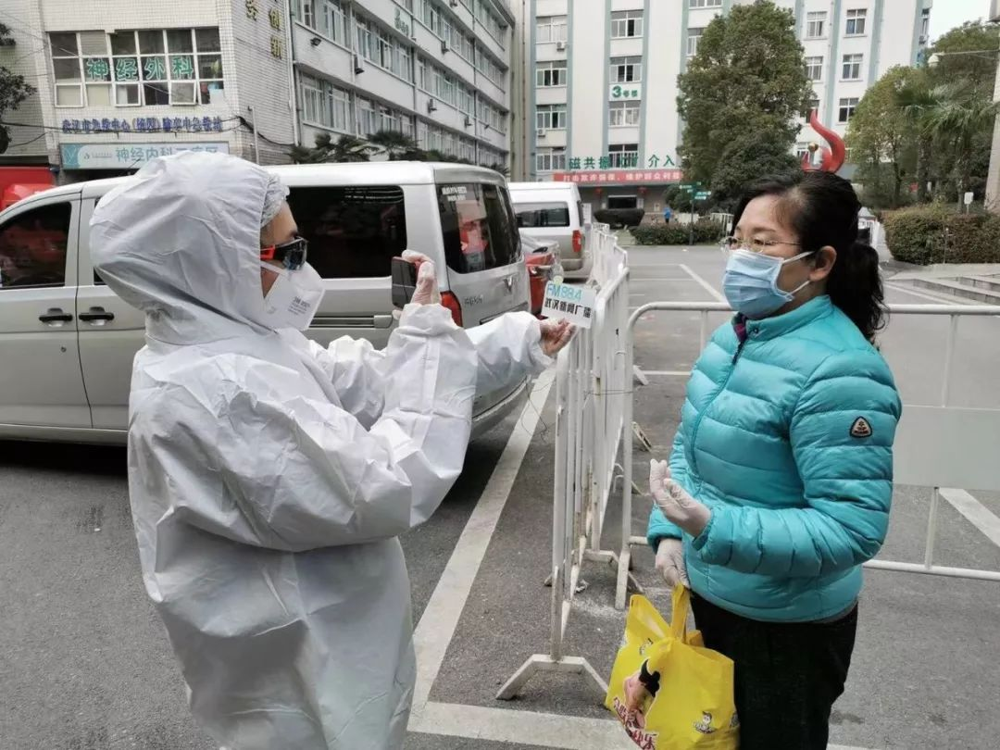

120急救车，生死时速里的患与医
原文链接 备份链接 二月的武汉城内，感染肺炎的患者与家属四处寻找床位。亲朋好友们在家为他们祈祷，同时精神高度警惕着病毒。他们在生死时速的这一头。另一头，是坐在120救护车里，24小时轮班，在武汉空荡的大街上飞奔的救护车医生们。 文 | 熊 …
2月5日，一条报道了武汉女孩素素的故事，
当天微信阅读超过120万。
她通过自己在家隔离，熬过了这次的新型肺炎，
同时，还有更多的人在经历着生离死别。

纬纬和妈妈
故事发布后，
文章中的另一个女孩纬纬当天在后台联系我们，
愿意主动分享妈妈的治疗历程。
从1月13日住进武昌医院，到2月1日出院，
纬纬一家辗转3个科室，
经历了将近20天的艰难治疗，最终顺利出院。

纬纬在妈妈出院那天发的朋友圈
她说，我想把我们母女的故事分享出来，
给更多的人看到战胜病魔的正能量，
告诉大家一定要坚持，
只要坚持下去，就能看到希望！


郑阿姨和武昌医院医护人员的合影
我妈妈刚开始有点不舒服，是在一月初，她觉得有点感冒发烧，是她自己先去的医院，看病打针。那时候我还开玩笑跟她说，现在新闻都在说什么新型肺炎，你现在要是感冒发烧很敏感了，小心被隔离了。
我是90后，我妈妈是63年的，她退休了以后，经常在八一艺术团参加一些中老年人的演出，身体也还可以，没有慢性病什么的。
现在回忆起来，我妈妈可能就是第一次去医院的时候没有防护，被感染的。
从医院回来后我妈本来已经感冒康复，过了两三天，1月12日左右她又发烧了，这次发烧她感觉特别心慌胸闷，心脏特别不舒服，喘不过来气。因为武昌医院离我们家比较近，发烧第二天她就住进了武昌医院的心血管科。
当时，心血管科的诊断是疑似发烧引起的心肌炎，还做了心电图，但是病因一直没有找到。妈妈住院的这几天还没春节放假，我每天下班，就去住院部看她，跟她一起吃饭。
有一天我们最忙的时候，我接到了心血管科的医生的电话，她说我妈情况不太好，要我赶快来，我很紧张，向单位请了假就去了。
医生把我叫到她办公室，说我妈妈住院了3、4天，打完了头孢三代、左氧沙星，还有一些消炎类的药物，但是发烧的症状还是没有缓解，得转到呼吸内科去。
最可怕的是我妈妈的肺部，两次CT变化很大。刚住院的时候，妈妈肺部的CT没有什么问题，可能有轻微的炎症。医生那天叫我去的时候，我很清楚地看到我妈的肺有鳞片状，很多片状的白色阴影，在她的肺小叶的末端均匀分布。竟然在用了这么多消炎抗病毒药治疗的情况下，三天之内急剧加重成这个样子。

郑阿姨的演出照（右三）
我记得呼吸内科的医生跟我说的第一句话是：你妈妈的情况不是很好，你现在做的只有祈祷，祈祷你的妈妈不是（新型冠状病毒）。我一听这个话，真的就是眼前一黑。
但我很快就振作起来，就算用尽各种办法，我也要救我妈妈。当时呼吸科那层楼已经住不下了，全都是人，过道上也都是人，最后我们是住进了消化内科的那一层的过道加床。
因为不在同一楼层，我每天就在呼吸科和消化科几处奔走，排队买药。
在我妈转到呼吸内科去不久，我爸也开始发热了，他跟我妈妈的状况比较相似，但是一进医院之后状况更糟糕。刚开始的前两天，我爸是坐在呼吸内科过道的板凳上面打针，我是楼上楼下跑送饭。过了两天左右他的白细胞已经快降到零了，生命体征特别不好，就直接转到ICU里了。

刚住院那几天，郑阿姨在心内科病房
呼吸科的病人太多了，所有的走道都是满的，没有床位的病人就坐在走廊里打针，我其实特别怕，但是我没有办法，也是那时我才开始戴口罩，有防护意识。每一天在医院照顾我妈大概16个小时，早上8点就去了，陪床到12点半才回家。每天回家以后把衣服全部脱下来，从里到外消毒、洗，然后洗头、洗澡。可能洗完又到凌晨一两点，然后第2天早上8点再去医院。
那几天，妈妈的情况一天比一天差，吃不下任何东西。这个病有一个显著的特征，就是没有胃口。她就只喝一点点稀饭，每天都在反复发烧。下午烧一次，半夜又烧一次，就这样连续烧了快10天。
那段时间其实我也很怕，我求助了所有的朋友、闺蜜，让他们帮我想办法。已经治了这么久，人还是烧得糊里糊涂。如果治不好的话，要不要转到三甲医院去？

郑阿姨的第二次CT报告
医生也知道我的情况，她说你爸爸在ICU，妈妈在病床上，你要坚强。每天一看见医生，我的眼泪就不停地掉，护士长跟医生都安慰我说，你不能哭，你哭了，如果让妈妈看见更不得了。所以我每一次都是把眼泪一擦，转头再用笑脸去面对妈妈，鼓励她。
呼吸内科的一个护士长，她看到我父母这样，觉得我很可怜，就偷偷地往我口袋里面塞口罩，还拿了护士的那种帽子。她说你要戴帽子，这里太危险了，那些飞沫沾在头发上也很危险。还叮嘱我每天回去一定要洗手，跟妈妈接触，陪她上厕所或者是帮她拿了水，一定要洗手，还把护士站专门的消毒液给我用。我就疯狂地洗手，手都要洗烂了。
有一天我发现一个很危险的情况，她白天因为发烧整个人不停地颤抖，手脚痉挛，她就说非常冷，畏寒。虽然一直在吸氧，但感觉有一点呼吸困难了。我就把医生叫来，医生给我妈妈上了一种退烧栓，还打了一种肌肉注射的强行退烧的针，但仍旧没有好转迹象。
1月19号晚上，妈妈突然便血了。她自己还比较乐观，说可能是发了痔疮。护士长给了我一个取样器，说让妈妈下次取一点样送去化验。当我看见取样杯的时候，崩溃了，便很少，全部都是血。
在妈妈住院的时候，我自己上网查了非常多案例及别人的帖子，几乎所有人都提到在病情恶化后会出现便血的情况。
那天半夜12点多，我拿着小量杯，送去另外一个楼化验。我觉得那天晚上的风特别冷，那段路是我从小到大走得最漫长的一段路。我全身都在发抖，我就觉得我是不是快要失去我妈妈了，我父亲那边还不知道怎么样，自己也有可能被感染……那种看不到希望，觉得一切都要完了的绝望。

呼吸内科满员，郑阿姨在消化内科走廊加床
妈妈便血后的第2天，医院的领导很关心我们家的情况，告诉我不要灰心，还是要鼓起勇气，“过道加床环境也不是很好，也不能好好休息，我们想办法让她到环境稍微好一点的地方治疗。”医院建议让妈妈转入ICU病房。
武昌医院不是三甲医院，我也考虑过转院的问题，一是因为当时整个武汉市所有的三甲医院全部爆满，很难找到床位；二是我查了资料，新型肺炎目前没有特效药，不如安心在一个医院好好治。所以就同意让母亲转去ICU继续治疗。
事实证明我的选择没有错，我们遇到的武昌医院每一个科室的医生护士都特别好。
一月十几号的时候，武汉情况就已经很严重了，但是核酸检测方法还没有大面积运用，确诊的办法就是查已知病毒是否是阴性。我爸爸是所有的已知病毒全部阴性，就很快被确诊为新型肺炎，所以直接从武昌医院的ICU，转到了武汉市集中收治的金银潭医院，而我妈妈一直到转入ICU病房才确诊。

每天给妈妈送的保命药，要放在冰箱冷藏
我妈妈一直在ICU，每天打非常多的针，保护器官的药、各种营养针、各种抗病毒抗感染的针，包括免疫球蛋白。每天从早上8点开始打，一直到凌晨到5点才能打完。
医生对我说，这个病现在没有特效药，只能用球蛋白或是激素疗法，辅助和增强你的抵抗力，最后战胜病毒还是靠你自己。从1月16号开始，医生就要我去买人体免疫球蛋白，这个药很贵，我爸跟我妈基本上一天6瓶，一个人光打球蛋白一天就是3、4千块。
妈妈进ICU的头两天还是在发烧。她每天早上给我发消息，说昨晚有一点烧。我就跟她说：没关系，继续保持！继续坚持下去一定会好的！
那段时间我睡眠特别浅，不管她6点还是几点给我发第一条消息，我都会听见，然后马上回复她，我就说很好！继续保持加油！
纬纬给妈妈加油打气
我没有办法去探望她，只能每天给她打鸡血、鼓励她。我说你自己要有信心，不能放弃，能挺着熬过来就熬过来了，这个病对中老年人病程都是比较长，都是20多天，它有一个过程，你现在赛程才过半，后面还有一半的路要走，一定要坚持下去。
我就这样每天不停地给她洗脑，不停地输出，不让她有一丝松懈。
但是我自己忍受着强烈的恐惧，当时真的靠一股意志力把我支撑着。因为我很怕我自己也被感染，如果我被感染了，谁给我送球蛋白、送保命的药，就没有人照顾我爸妈了，我们这个家就完了，所以我怎么样我也不能被感染。
免疫球蛋白连续打了大概5天以后，妈妈的体温就慢慢稳定下来了。

郑阿姨出院前与医护人员合影
因为住院太久了，那个时候妈妈没有看外面的新闻，她不知道这是一件非常恐怖的事，这种盲目的乐观其实帮助了她。
等到她的体温慢慢稳定了。她开始跟我说，她在ICU觉得有点饿了，我听到很高兴，有胃口就代表她已经开始恢复了，变好了。
我记得1月26号那天我还专门在网上下单，想办法找人给ICU送了一大堆吃的，各种水果、零食。我跟妈妈说一定要吃饱，不保证营养、不吃饱怎么能恢复呢？当时我还写了一条很长的备注，特别害怕外卖小哥看到医院的单子不敢接。我那个时候想，如果没有人接，我就是出门骑共享单车，也得送到医院。

纬纬给骑手的备注
后来妈妈越来越稳定之后，就开始做核酸测试。必须两次核酸测试结果连续阴性，中间间隔24小时，才能达到出院的标准。我妈测试的结果就是一次阴，一次阳，可能不是很稳定，她在ICU里就又过了一段时间。
一直到2月1号那天，两次核酸测试都是阴性，ICU才宣布她可以出院。
妈妈出院的那天，武汉已经封城9天了。我被社区定为密切接触者，出门受到了很大的限制，问了120、社区用车、志愿者车队也都没有回应。当时我的一个好朋友知道了，她刚好在媒体，主动提出去医院接我妈妈，还帮我记录下了妈妈出院的这一刻。

出院时接受媒体采访
从妈妈进ICU到现在出院这么多天，我一直没有见到她，虽然住的两个小区只有几百米，但是我们都在坚持互相隔离。
在我妈出院之前，我就联系了社区、物业，联系了洪山疾控中心，对家里进行了专业的消毒，妈妈回来了之后，我就请代跑腿小哥，给家里送了很多蔬菜水果。
我妈出院回来以后，她的肺部其实还是有一些损伤，比较容易胸闷气短，毕竟人躺了那么长时间，各方面都有点虚弱。过了一两天，我爸爸也从金银潭出院了。
出院之后，我特意嘱咐他们两个人要分房睡，分餐吃，不要出门，还是继续互相隔离，再观察一段时间。医生还开了一些药给他们，现在他们两个在家里正常做饭，自己照顾自己。

妈妈的手被用作宣传照
现在想想，我觉得就是依靠自己强大的意志力。这么长时间自己其实也没有特别的防护，就是吃奥司他韦，一天一颗，密切接触者吃10天，还有一些其他中成药。然后就是跟我的闺蜜们在网上一起打气，我还把我防护的一些小技巧写了一个简短的攻略，怎么吃药，用什么洗手，用什么消毒，然后要吃什么东西，怎么样增强抵抗力，跟她们分享。
我妈住院这十几天，我完全没有顾得上给自己囤物资、做饭，都是周围的朋友，隔空给我家门口投送一些熟食、水果、药物。大年三十，我记得是这个送我一点水果，那个送我一点蔬菜，另外一个人送我一点肉，煮了点速冻饺子。整个过年都是我一个人在家，根本顾不上吃喝，一有空就在查关于这个病的资料。
中间陪护那几天我已经有一点症状，有一点鼻塞，喉咙也有点疼，我就赶快吃药，心里想说我千万不能被病毒入侵了，我一定要坚持住。现在我差不多在家自我隔离了14天了，身体状况一切良好，也是一种万幸。
我觉得我妈妈能康复的最大原因，除了本来身体素质比较好，还因为她是特别乐观的人，面对任何事情都有一个好的心态，这是我们的幸运。而且有很多医生、护士帮助了我们，我特别感谢他们！
*** 妈妈出院之后，我产生了一些应激反应 ***
经历了这20天的生死离别，我再回想起来很后怕，最严重的时候，我整晚整晚地做噩梦，有时候会梦见我自己也生病了，可是早上起来之后，我还是坚持跟自己说，没事的，肯定没事的。
后来我找心理医生聊了一下，她说现在的应激反应需要时间和自我调节，才能慢慢恢复。因为妈妈出院了，好像一下子把我从某种状态里面拉回到现实生活，精神还是特别紧张。所以我一直没有联络很多人，直到这两天状态好一些，我才想把自己的经历分享给更多的人知道。
我觉得这个病就像猫跟老鼠，你抵抗力很强，它就入侵不了。我们武汉人有一句话，叫“不信邪”，我觉得这就是我们武汉人的精神。一定要坚定信念，用最强的信念去打败它、战胜它。
*纬纬**总结的防疫小攻略 *
（*个人服药经历仅供参考，具体请遵医嘱）
一、必备仪器：
温度计、血氧仪（血氧指数很关键）

二、外用消毒类：
消毒型洗手产品（泡沫/洗手液/喷雾）
居家清洁用品（75度以上酒精/84消毒液/乙酸消毒液）

三、内服药品类：
1.奥司他韦（预防每天一颗即可。有症状不舒服，早晚各一颗。）
2.小柴胡颗粒莲花清瘟颗粒（医生推荐，我买了金叶败毒。2者类似，都是一天2-3次，每天喝。）
3.板蓝根（虽然有的人说没用，我还是在早晚喝。和抗病毒口服交叉预防。）
四、其他：
买维生素C，保证每日多摄取，泡腾片、维生素片都可以。多吃维C高的水果。

疫情依然严峻，针对以下人群，
我们正在寻找采访对象！
#我在疫情一线#
不论是您是在湖北还是全国其他地区，只要您是奋战在一线的医护人员、后勤补给人员、记者、患者或患者家属，我们希望听到您的见闻和最迫切的需求。
#我的武汉现场#
如果您正身在武汉，如果您愿意讲述在“封城”后的实地体验见闻，我们希望把它传递给更多人。
请通过以下方式联系一条编辑，我们期盼您的消息！
一条编辑部邮箱editor@yit.com
或直接在文章下留言。
请您留下所在地、职业，大致讲述您的见闻与故事，如合适我们将尽快与您取得联系，进行采访！
如有图片也欢迎一并发来。

原文链接 备份链接 二月的武汉城内，感染肺炎的患者与家属四处寻找床位。亲朋好友们在家为他们祈祷，同时精神高度警惕着病毒。他们在生死时速的这一头。另一头，是坐在120救护车里，24小时轮班，在武汉空荡的大街上飞奔的救护车医生们。 文 | 熊 …
原文链接 备份链接 看到“7例肺炎”的新闻后，小熊赶回了武汉。但妈妈还是病倒了。目前居家隔离的妈妈病情有所好转，可小熊还是一刻不敢放松。 文 | 吴美芬 1月1日，家住武汉的小熊在贵阳出差。这天他第一次听说了“新型肺炎”，新闻里说武汉有7 …
原文链接 备份链接 输不上血小板，母亲的血象每况日下。一向羞于求人，兢兢业业照顾母亲的小雯开始呼救，「在这样的天灾人祸面前，我妈妈这样的病人，可能成为了不计一切代价中间的‘代价’」。 文 | 徐玮超 （应当事人要求，声音已处理） 跟小雯取 …
原文链接 备份链接 希望大家在关注武汉之余 能把目光和关怀投向同样危急的黄冈接受采访的时候，孙亮哭了。 不到半个月的时间，父母相续感染上新冠肺炎，如今父亲去世、母亲至今仍在ICU。他之所以接受采访，是因为想把真实的情况告知更多的人，希望大 …
原文链接 备份链接 武汉女孩薇薇到现在也不确定妈妈是怎么感染的，她只能想到一个可能性：1月6日，家里为爷爷办了葬礼。当时，大部分人对「出现不明原因病毒型肺炎」的消息并不在意。亲戚们从武汉各地赶来。葬礼后，妈妈开始发烧，之后，爸爸和奶奶也开 …